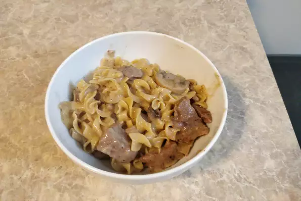

Beef Stroganoff

Beef Stroganoff for Instant Pot
Instant Pot beef stroganoff is truly a one-pot meal! Fork-tender beef and mushrooms are cooked right with the egg
noodles. This recipe is written for the Instant Pot.
Ingredients
- 2 tablespoons canola oil
- ½ onion, diced
- 2 teaspoons salt, divided
- 2 pounds beef stew meat, cut into 1-inch cubes
Steps
-
Turn on a multi-functional pressure cooker (such as an Instant Pot) and select Sauté function. Heat oil for 1
minute.
- Add onion and 1/2 teaspoon salt to pot; cook and stir until onion begins to soften, 3 to 4 minutes.
-
Sprinkle beef with 1 teaspoon salt and the pepper. Add to the pot. Cook and stir until beef is evenly browned,
about 2 minutes.
- Add garlic and thyme; cook until fragrant, about 30 seconds.